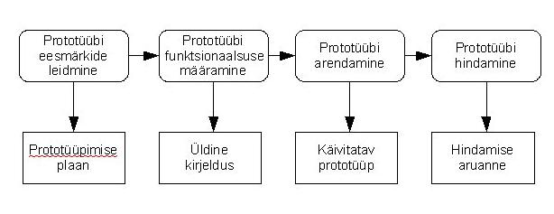

Prototüüp on süsteemi algne versioon, mida kasutatakse disaini
võimaluste katsetamiseks ja ideede näitamiseks.
Prototüüpe saab kasutata erinevate arendus faaside täitmises. Näiteks
nõuete ja riskide leidmisel, disaini valikutevõimaluste uurimisel ja
kasutajaliidese kavandamiseks.
Mõned kasud prototüüpimisest on: parem kasutusmugavus, kvaliteet ja
hooldavus ning väihem mure arendamisel.
Oluline on prototüübi kiire loomine, kasutades kõiki käes olevaid abivahendeid.
Prototüüp ei pea sisaldama kogu funktsionaalsust, kuid peaks keskenduma sellele
millest pole arusaadud.
Prototüüpe võib luua erinevate eesmärkide jaoks. Näiteks ühekordne prototüüpimine,
evolutsiooniline prototüüpimine ja lisanduv prototüüpimine.

eõpearhiiv Allikad (eucip)